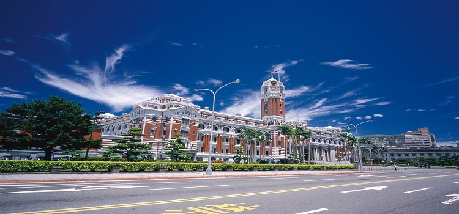

著名景点
#总统府#
总统府座落在台北市中正区重庆南路一段122号，正大门面对凯达格兰大道，正面（东向）重庆南路，背面（西向）博爱路，北向为宝庆路，南向为贵阳街。

图：总统府
气魄雄伟、巍峨高耸的总统府，在宽敞广场的衬托下，尤显尊贵气派，此栋建筑系日治时期「总督府」之所在，自1919年完工以来，便一直是中国台湾地区的最高权力中心所在，此建筑也是台湾地区行政当局所谓“文化部”所指定的古迹。若欣逢国家重大庆典节日，如新年、10月10日双十节等，则总统府四周更是结彩华灯，辉灿极致。
电话：（02）2311-3731
地址：台北市中正区重庆南路一段122号
大众运输：搭高铁或台铁至台北站下-转搭台北捷运至台大医院站下。
注意事项：非假日参观采直接现场排队方式参观，15人（含）以上团体请于3天〈不含参观日、预约日及放假日〉前，以传真或至总统府网站办理，预约洽询专线02-23120760、02-23206921，传真预约02-23120757；请出示身份证件，由博爱路与宝庆路口排队进入。
假日参观不需预约，请携带身份证件，并完成安全检查后即可进入。
#士林官邸#
士林官邸坐落于士林区中山北路5段与福林路口东南侧。在国民政府迁台后，1950年时，先总统蒋中正先生的官邸便设于此。
经过46年的严密护卫，民主的潮流使士林官邸在1996年正式开放，成为游客们在假日时的另一去处。官邸由外而内分为外花园、内花园、正房；外花园中有温室盆栽区（栽培兰花为主），而旁边的玫瑰园区（栽培玫瑰为主）也是花团锦簇，玫瑰园盛开的时期是在3月到5月，是蒋夫人最爱的玫瑰花园。官邸内处处鸟语花香，景观清幽雅静。
电话：（02）2881-2512
地址：台北市士林区福林路60号

图：士林官邸
#艋舺清水岩#
艋舺清水岩又称「祖师庙」，在清乾隆52年（公元1787年）建立。与艋舺龙山寺、大龙峒保安宫，并称「台北三大庙门」。
主祀的清水祖师陈昭应是福建安溪移民从故乡请来，共有7尊。祖师庙历史悠久，在前殿中门前，有一对粗壮的龙柱；而两侧的山墙，有18世纪末、19世纪初的砖雕图案，是庙中现存最古老的艺术品。
此外，在梁架、石壁、龙柱上，也都刻有清朝的帝号年代，都是浑厚朴拙的作品，所以祖师庙曾被称为表现清代中期最具特色和艺术水平的台湾庙宇。
电话：（02）2371-1517
地址：台北市万华区康定路81号
图：清水岩祖师庙
#中正纪念堂#
占地24.79公顷的中正纪念堂位于台北市中心，是为追念先总统蒋公而建造的纪念堂，造型仿北平天坛之顶、埃及金字塔之体，高耸威严。纪念堂左右分列戏剧院与音乐厅，古色古香的中国宫殿式建筑，庄严宏伟，许多国内外之文化表演均在此进行。由于占地广阔、建筑美丽，是民众活动聚会及婚纱摄影的胜地，更成为国外旅客必访之地。
地址：台北市中正区中山南路21号
大众运输：搭高铁或台铁至台北站下-转搭台北捷运至中正纪念堂站下。
搭台北市双层观光巴士至信义林森路口下。
图：国立中正纪念堂
#国立台湾博物馆#
国立台湾博物馆成立于1908年，是台湾现存历史最悠久的博物馆。设计者为日籍建筑师野村一郎，建筑样式采仿文艺复兴时期古希腊多立克式，其壮硕的建筑形态与优美的古典雕塑工艺，一直被视为台湾近代难得一见的建筑瑰宝。
这座屹立于台北火车站前的博物馆，以其典雅庄严的建筑、丰富多样的展示搜藏与核心的地理位置，成为重要的历史地标之一，1998年经内政部评定为「国定古迹」。百年来见证台湾自然与人文的演变，累积藏品逾11万件，包括台湾最珍贵的动、植物与地质学标本，以及最精华的民族与人类学文物，可使旅客深入认识台湾。
电话：（02）2382-2699
地址：台北市中正区襄阳路2号
图：国立台湾博物馆
#台北市立动物园#
台北市立动物园位于文山区又称木栅动物园，国立政治大学附近。民国75年10月31日正式开放，目前园区总面积165公顷，园内的设计，充分利用该地形，维护景观及自然生态。
展示区包括两栖爬虫动物馆、台湾乡土动物区、亚洲热带雨林区、沙漠动物区、澳洲动物区、非洲动物区、温带动物区、鸟园区、可爱动物区、蝴蝶公园、教育中心、夜行动物馆、无尾熊馆、企鹅馆、昆虫馆、植物观察区等，具有教育、保育研究及休闲娱乐的意义。此外，园区还设有野餐区、野外动物植物观察区、青少年体能训练场。
电话：（02）2938-2300
地址：台北市文山区新光路二段30号
大众运输：搭高铁或台铁至台北站下-转搭台北捷运至动物园站下。
图：台北市立动物园
#台北故宫博物院#
故宫收藏的文物珍宝，是举世闻名的文化资产，从帝王收藏到全民共有，传承有序的国立故宫博物院典藏，其收藏品的年代几乎囊括了整个中华文化五千余年未曾中断的历史，在世界文明史上独一无二。博物院内60多万件收藏品中，大多数是昔日中国皇室的收集品，皇室的收藏则始自1000多年前的宋朝。
随着数字科技广泛应用在博物馆的展览或硬设备，历时三年的正馆改建工程，于2007年2月改建完工后的新故宫，除了提供焕然一新的展览手法之外，也增建了数字学习空间，如数字导览大厅、多媒体放映室、多媒体儿童学习区等，同时持续推动「数字典藏」、「数字博物馆」以及「数字学习」等计划，营造一个无围墙的博物馆。而多样化的餐饮服务、电影院以及文化商店等等。
电话：（02）2881-2021
地址：台北市士林区至善路二段221号
大众运输：搭高铁或台铁至台北站下-转搭台北捷运至士林站下-转搭台北市公交车（红30路）至故宫博物院站下。或搭台北市双层观光巴士至故宫博物院下.
图：台北故宫博物馆
#松山慈佑宫#
慈佑宫在公元1753年建立，是松山地区发展的起源地。松山曾经叫做锡口，以松山慈佑宫正门上的匾额，写的是「锡口慈佑宫」。每年农历4月，慈佑宫信徒会轮流主办「妈祖过炉」庆典，来表达对妈祖的敬谢，非常热闹。
电话：02-2766-3012
地址：台北市松山区八德路四段761号
图：松山慈佑宫
#猫空缆车#
猫空缆车为台北市第一条缆车系统，系采用法国POMA公司所生产的自动循环式系统，最短发车间隔为12秒，全程搭乘时间约为20分钟。每节车厢可容纳8人，单向最高载客量约为每小时2，000人。车厢有144部，另有3部备用车厢。
全长达4.03公里，行驶路线成7字型，共有4个停靠站，依序为「动物园站」、「动物园内站」、「指南宫站」及「猫空站」。另外还有2个不停靠的转角站，主要目的为引导钢缆进行转弯，几近90度的大转弯，也是猫空缆车一大特色。在缆车上能从高空俯瞰猫空茶园的景色，随着缆车上山，也别有一番刺激感。
电话：02-2181-2345
地址：台北市文山区新光路二段经
大众运输：
猫空缆车动物园站：搭高铁或台铁至台北站下-转搭台北捷运至动物园站下。
猫空缆车猫空站：搭高铁或台铁至台北站下-转搭台北捷运至万芳小区站下-转搭台北市公交车（小10路）至猫空缆车站下。
图：猫空缆车
#北投风华小镇#
被美国纽约时报旅游版网站推崇是台湾温泉天堂的「北投」，拥有丰富的自然资源、浓厚的历史文化，是台北市著名的旅游胜地。除了北投温泉博物馆、北投文物馆、梅庭等丰富的古迹人文景点，还有林立的温泉特色旅馆，是台北最具特色的观光小城。
地址：台北市北投区
大众运输：
高铁：至台北站，转搭捷运淡水线至北投站，换乘捷运新北投支线，至捷运新北投站下车。
台铁：至台北站，转搭捷运淡水线至北投站，换乘捷运新北投支线，至捷运新北投站下车。
客运：搭高铁或台铁至台北站，于台北车站（郑州）搭218路公交车至北投公园站下车。
捷运：搭乘捷运淡水线，于捷运北投站换乘捷运新北投支线，至捷运新北投站下车。
图：北头风华小镇
私房景点
#宝藏岩聚落#
位于台湾台北市中正区西南端小观音山南侧的一个依山而造的违建集合而成的小邻里社区，得名于该地佛寺宝藏岩观音亭。
宝藏岩聚落虽然不大，总面积只有3.97公顷。但拥有傍水山坡之战后违建眷村等等人文特殊景观，1997年6月后，受到部分台湾学者及民众的普遍注意。经过整建与媒体报导，2006年，《纽约时报》将该聚落纳入台北最具特色的景点之一，与全世界第六高楼台北101齐名。
2011年，台北市政府文化局公告登录宝藏岩聚落为该市「聚落」。乃非正式营造过程所形成的聚落中，由荣民、城乡移民与都市原住民等社会弱势族群，于都市边缘山坡地上自力造屋的代表，有历史的特色。
体字按钮进行在线转换
地址：台北市中正区汀州路3段
图：宝藏岩聚落
#台北水岸自行车道好风情#
经过十几年来的修筑与建设，大台北地区的水岸自行车道，平坦、舒适，又包含许许多多的历史与人文。以不同的方式，串连各种主题单车游程，台北市境内的河岸风情，显得丰富而多元。
图：台北水岸自行车道
#市区看萤火虫#
很多人不知道，在市区也能看到萤火虫！入夜后，黑翅晦萤与黄缘萤提灯飞舞草丛间，虎山溪的青蛙大合唱成了最佳配乐。除了近郊，市区的荣星花园、木栅公园与大安森林公园也可见荧光点点，无需长途跋涉，一转身就能发现幸福。
图：萤火虫
#阳明山看夜景#
阳明山的夜景在台北市颇负盛名，随着仰德大道直上，沿路都可欣赏到台北市夜晚灿烂星空与闪烁灯海相映的景象，观赏夜景的好地方还包括竹子湖观景台、林语堂故居，及绕过阳明山公园往顶湖或北投地区之处。
地址：台北市北投区阳明山竹子湖路1-20号